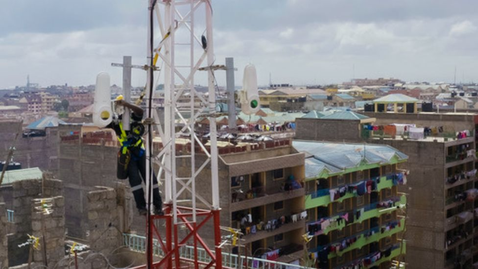
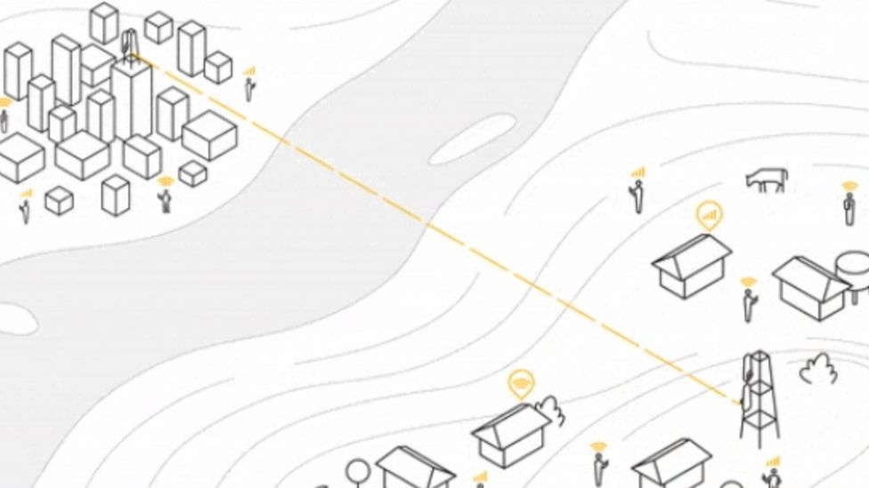

By Jane Wakefield
Technology reporter
A novel way of delivering high-speed internet via beams of light through the air has successfully transmitted data across the Congo River.
means that citizens in Brazzaville and Kinshasa could get faster and cheaper broadband. Project Taara is one of Alphabet X's (formerly Google X) so-called moonshot ideas. It grew out of Project Loon, a broadband project using balloons in the stratosphere, since shut down. The latest experiment means that a "particularly stubborn connectivity gap" between the two African cities - Brazzaville in the Republic of the Congo and Kinshasa in the Democratic Republic of Congo - has been filled, said the team in a blog. The cities lie only three miles apart but connecting them is tricky because traditional cable has to be routed around the river, making broadband prices five times more
wireless optical communications (WOC) system provided nearly 700 terabytes of data in 20 days with 99.9% availability, the team at X reported. "While we don't expect to see perfect reliability in all kinds of weather and conditions in future, we're confident Taara's links will continue to deliver similar performance and will play a key role in bringing fast, more affordable connectivity to the 17 million people living in these cities," it said in the blog. It is the latest iteration of the project which has been in development for three years. X is working with Econet Group and Liquid Telecom to bring high-speed internet to sub-Saharan Africa and has begun a commercial rollout in Kenya. The system uses very narrow, invisible beams of light to deliver high speeds, similar to the way traditional fibre in the ground uses light to carry data but without the cable casing. The technology, known as Free Space Optical Communications, grew out of experiments the team had previously used to beam lasers between balloons in Project Loon, which was shut down by Alphabet in February because it was no longer seen as commercially viable. It is not perfect and the team admits it will not offer full reliability in challenging conditions, such as fog, haze or when birds fly in front of the signal.
it has been improved by adjusting the level of laser power being transmitted, which works a bit like a telescope, relying on mirrors, lights, software and hardware to move the beam to exactly where it needs to be. The team have also found ways to reduce errors due to interruptions such as birds flying through the link. "While places like foggy San Francisco may never be an ideal spot to use WOC, there are many, many places around the world with ideal weather conditions for Taara's links," the blog read. The technology has also be trialled in Kenya, India, the US and Mexico. Other projects Alphabet X is working on include: